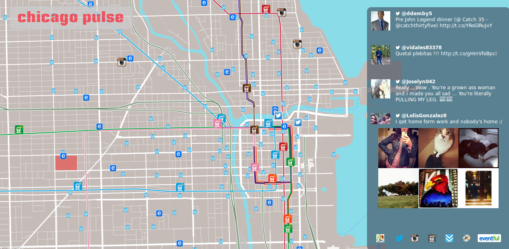
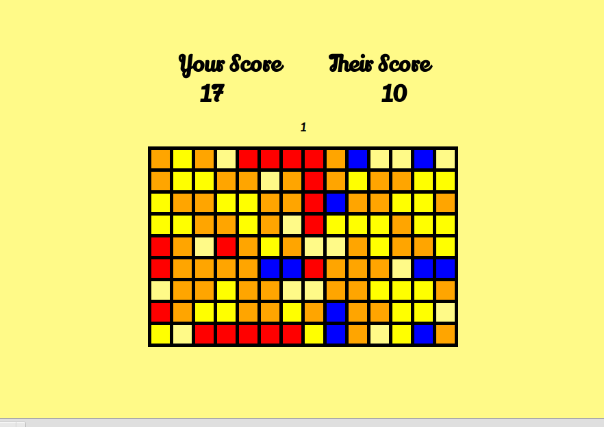
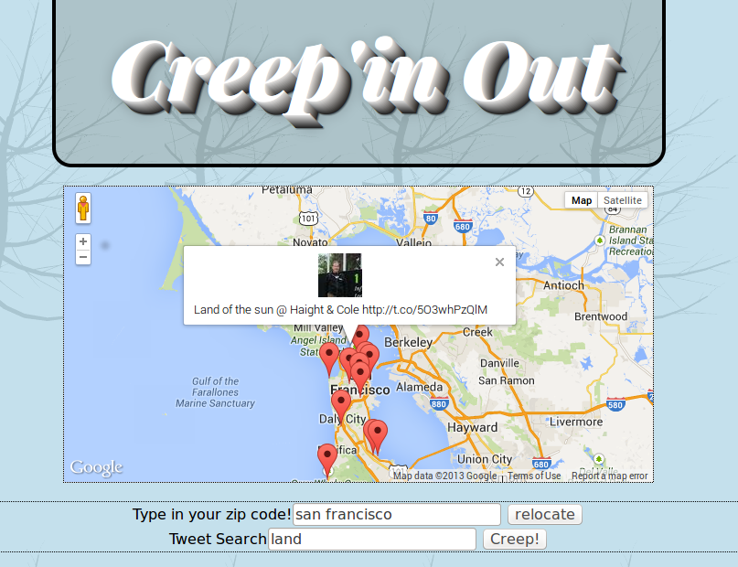

About Me
Developer of web-based applications and fan of object-oriented design. Currently living in the city of Cin and working with some true class acts at Ahalogy

Relevant Skills
- Ruby
- Cucumber
- JavaScript
- CoffeeScript
- Rails
- Sinatra
- Rspec
- Jquery
- SQL
- Redis
- Heroku
Projects
City Pulse
City Pulse is a project I started with a team of guys from Chicago. The site was designed to give the user a digital visualization of the city of Chicago. We used six APIs that supplied us with geolocated data that we could plot using google maps. This project incorporates web sockets for persisting data from the server to the client in a free flow without a trigger. the site also incorporates the use of cron tasks that fetch fresh data from APIs to be held and then displayed to our users. we chose to retrieve our data via cron rather than on a user action to reduce the rate of API calls from the current amount of users to a constant 15 a minute. Unfortunately this project is no longer hosted.(Heroku is getting a bit expensive.)
Gold Rush
Gold Rush is personal project I made to work on my JavaScript skills and also learn a new open socket technology called Firebase. The game simulates a Pac-Man style game in which both players are trying to collect as many Gold pieces as possible. all player movement and score updates are run through the Firebase server and then on to each players screen. I made this back in January in hopes of impressing the guys at firebase.
Repo
Creep'in Out
Creep'in out was an independent project I worked on that gives the user the ability to center on a region of google maps and pull in all the geolocated tweets from that region. The map then displays the tweet where it was tweeted on the map. This project was some what of a predecessor to City Pulse and helped us get a vision of what we wanted City Pulse to become.
Farkle
I built this app while trying to get an apprenticeship with the company NEO. Thier challenge was to build a full functioning farkle game on the command line, but I decided to take it up a notch and make a web app. I ended up getting a job at Ahalogy, and decided against the apprenticeship. The people at NEO were true delights though.
Repo
Fellow developers I've had the pleasure to work with.
Contact
LinkedIn josephburtoft89@gmail.com 574-527-3094